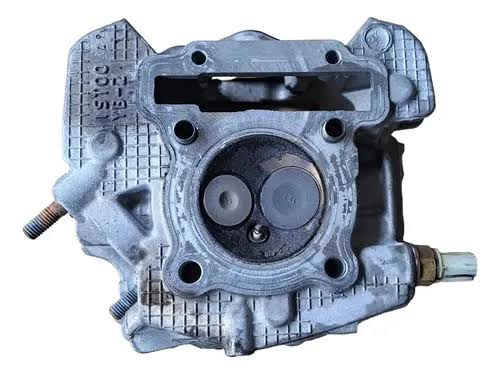

Nossos Produtos
Suspensão Yamaha crosser 150

- Encaixe padrão original: Fabricado com meidadas exatas de 37cm e 8 elos, permitindo substituição direta, sem necessidades de adaptações.
- Resistência e conforto: Desenvolvido com materiais metálicos resistentes para absorver impactos severos no uso urbano diário ou offroad.
- Garantia de fabrica: Oferece 3 meses de garantia contra defeitos de fabricação, acompanha as buchas necessárias para a instalação.
Farol dianteiro Yamaha Crosser 150

- Tecnologia Full LED: Iluminação total em LED para maior durabilidade e economia de bateria.
- Farol com Projetor: Facho de luz focado que melhora o alcance na estrada e evita dispersão.
- Luz de rodagem diurna integrada que aumenta a visibilidade da moto durante o dia.
Cabeçote Crosser 150

- Comando SOHC: Possui um único comando de válvulas no cabeçote que controla a admissão e o escape, ideal para entregar força em baixas e médias rotações.
- Duas Válvulas: Conta com uma válvula de admissão e uma válvula de escape otimizadas para o uso misto (cidade e terra).
- Compatibilidade: O desenho do cabeçote é compartilhado com outros motores de 150cc da marca, como a Yamaha Fazer 150, o que facilita a reposição de peças.